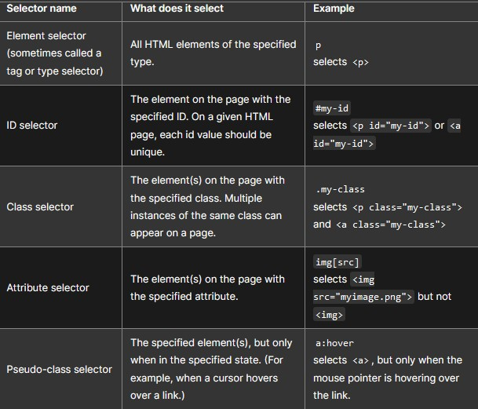

CSS is the code that styles web content. CSS basics walks through what you need to get started. We'll answer questions like: How do I make text red? How do I make content display at a certain location in the (webpage) layout? How do I decorate my webpage with background images and colors?
Styling your Website
This guide assumes you have the following basic background:
- A general understanding of the Internet and the World Wide Web (WWW).
- Good working knowledge of HyperText Markup Language (HTML).
- Some programming experience.
Like HTML, CSS is not a programming language. It's not a markup language either. CSS is a style sheet language. CSS is what you use to selectively style HTML elements. For example, this CSS selects paragraph text, setting the color to red:
p {
color: red;
}
Or this one, setting the font size for the paragraph to 20 pixels:
p {
font-size: 20px;
}
Let's try it out! Using a text editor, paste the three lines of CSS (above)
into a new file. Save the file as style.css in a directory named styles. To make
the code work, we still need to apply this CSS (above) to your HTML document.
Otherwise, the styling won't change the appearance of the HTML.
- Open your
index.htmlfile.
Paste the following line in the head (between the< head >and< /head >tags): - Save
index.htmland load it in your browser. If your paragraph text is red, congratulations! Your CSS is working.
<link
href="styles/style.css"
rel="stylesheet">
Let's dissect the CSS code for red paragraph text to understand how it works:

The whole structure is called a ruleset. (The term ruleset is often referred to as just rule.) Note the names of the individual parts:
- Selector: This is the HTML element name at the start of the ruleset. It defines the element(s) to be styled (in this example,
< p >elements). To style a different element, change the selector. - Declaration: This is a single rule like
color: red;. It specifies which of the element's properties you want to style. - Properties: These are ways in which you can style an HTML element. In CSS, you choose which properties you want to affect in the rule. (In this example,
coloris a property of the< p >elements.) - Property value: To the right of the property—after the colon—there is the property value. This chooses one out of many possible appearances for a given property. (For example, there are many
colorvalues in addition tored.)
Note the other important parts of the syntax:
- Apart from the selector, each ruleset must be wrapped in curly braces.
({}). - Within each declaration, you must use a colon
(:)to separate the property from its value or values. - Within each ruleset, you must use a semicolon
(;)to separate each declaration from the next one.
To modify multiple property values in one ruleset, write them separated by semicolons, like this:
p {
color: red;
width: 500px;
border: 1px solid black;
}
You can also select multiple elements and apply a single ruleset to all of them. Separate multiple selectors by commas. For example:
p, li, h1 {
color: red;
}
There are many different types of selectors. The examples above use element selectors, which select all elements of a given type. But we can make more specific selections as well. Here are some of the more common types of selectors:

There are many more selectors to discover. To learn more, see the MDN Selectors guide.
Something you'll notice about writing CSS: a lot of it is about boxes.
his includes setting size, color, and position. Most HTML elements on your page
can be thought of as boxes sitting on top of other boxes.
CSS layout is mostly based on the box model. Each box taking up space on your page
has properties like:
padding, the space around the content. In the example below, it is the space around the paragraph text.border, the solid line that is just outside the padding.margin, the space around the outside of the border.
In this section we also use:
widthof an element.background-color, the color behind an element's content and padding.color, the color of an element's content (usually text).text-shadow, sets a drop shadow on the text inside an element.displaysets the display mode of an element.
html {
background-color: #00539F;
}
This rule sets a background color for the entire page. Change the color code to the color you lile the most!
If you would like to know more about CSS, please visit MDN for more information.